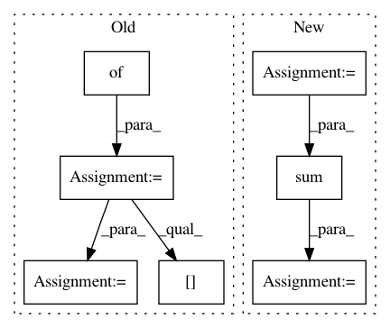

d04b0d52e8789d32d71c099e904a0617756884ac,dlpy/metrics.py,,accuracy_score,#Any#Any#Any#Any#Any#,29
Before Change
while matched_colname in castable.columns:
matched_colname = random_name(name="matched_")
castbl_params = {}
castbl_params["computedvars"] = [{"name":matched_colname}]
code = "if {0}={1} then {2}=1;else {2}=0".format(y_true, y_pred, matched_colname)
castbl_params["computedvarsprogram"] = code
castable = conn.CASTable(castable.name, **castbl_params)
if normalize:
score = castable[matched_colname].mean()
else:
score = castable[matched_colname].sum()
if tmp_table_created: // if tmp_table_created, tbl_name referes to the temporary table name
conn.retrieve("table.droptable", _messagelevel="error", name=castable.name)
After Change
// total number of observations
obs_per_class = conf_mat.sum()
tot_obs = sum(obs_per_class)
correct_pred_class = pd.Series(np.diag(conf_mat), index=[conf_mat.index, conf_mat.columns])
tot_correct_pred_obs = sum(correct_pred_class)
if normalize:
score = tot_correct_pred_obs/tot_obs
else:
In pattern: SUPERPATTERN
Frequency: 3
Non-data size: 7
Instances
Project Name: sassoftware/python-dlpy
Commit Name: d04b0d52e8789d32d71c099e904a0617756884ac
Time: 2019-09-17
Author: Xiangqian.Hu@SAS.COM
File Name: dlpy/metrics.py
Class Name:
Method Name: accuracy_score
Project Name: dirty-cat/dirty_cat
Commit Name: a1a430fa42fa58cb3ba9d93f44749319928b78c8
Time: 2018-03-14
Author: patricio.cerda@inria.fr
File Name: dirty_cat/string_distances.py
Class Name:
Method Name: ngram_similarity
Project Name: GoogleCloudPlatform/PerfKitBenchmarker
Commit Name: 37bb2945cc38af48dfa5ad09392736c427008a80
Time: 2015-12-09
Author: connormccoy@google.com
File Name: perfkitbenchmarker/linux_benchmarks/redis_benchmark.py
Class Name:
Method Name: Run